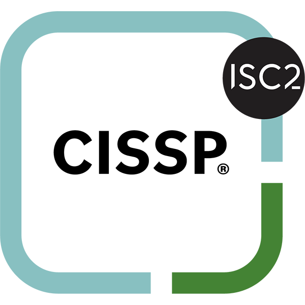
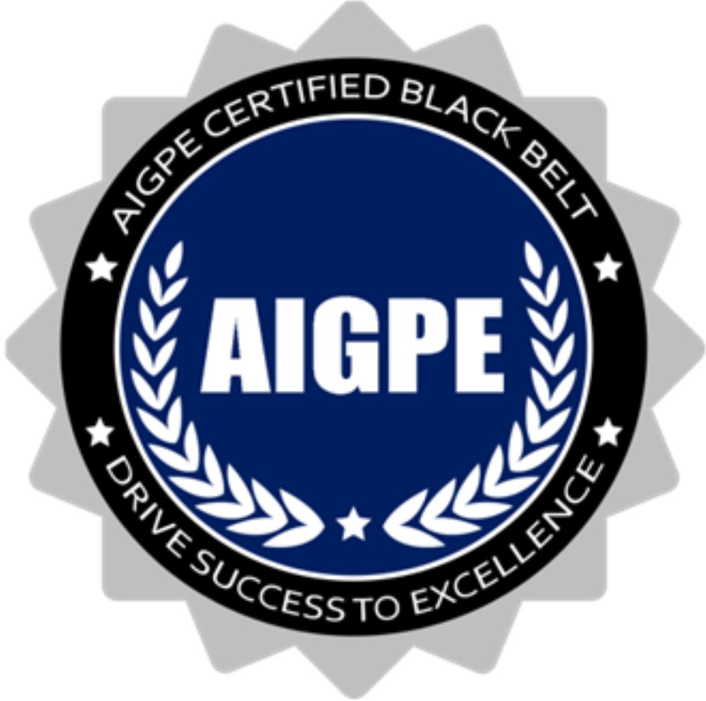

<p><font color="blue">Digital Credentials: </font><a href="https://www.credly.com/users/dannyteo/badges" target="_blank">Credly</a>
<font color="blue"> </font><a href="https://www.credential.net/profile/dannyteoyongsong178959/wallet#gs.2nbl8l" target="_blank">Acredible</a></p>
<!-- <p><a href="https://dannyteo.github.io/credentials/Danny%20Teo%20Profile.pdf"target="_blank">Download Danny Teo's profile here</a></p> -->
<!-- <picture> -->
  <!--<source media="(min-width: 650px)" srcset="TYS Profile.jpg">>--->
<!--   <source media="(min-width: 465px)" srcset="tys stage.jpg"> -->






<!--   
   -->
<!-- </picture> -->

<h1><font color="blue">Management Consulting</font></h1>
<ul class=listing>
<li><a href="https://Dannyteo.github.io/credentials/RMC.jpeg"target="_blank">Registered Management Consultant (RMC),</a> 
    <a href="https://www.imcs.sg/member-register/?membername=teo+yong+song&domain=all&membership_type=none&yoe=all"target="_blank">IMCS 2020 – 2026</a></li>
<li><a href="https://Dannyteo.github.io/credentials/PSCMC.jpg"target="_blank">Professional Singapore Certified Management Consultant (PSCMC), TÜV SÜD PSB 2017 – 2020</a></li>
<li><a href="https://dannyteo.github.io/credentials/imaa.jpg"target="_blank">International Mergers & Acquisitions Expert </a>
    <a href="https://imaa-institute.org/certificates/danny-teo-yeo-song-931/"target="_blank"> IM&A </a></li>
<li><a href="https://Dannyteo.github.io/credentials/EFM.jpeg"target="_blank">WSQ Essentials of Franchise Management, FLA</a></li>
<li><a  href="https://Dannyteo.github.io/credentials/LSSBB_Cert.png"target="_blank">Certified Lean Six Sigma Black Belt</a></li>
<li><a  href="https://Dannyteo.github.io/credentials/JIT%20Cert.png"target="_blank">Certified Lean Just-In-Time Specialist</a></li>
<li><a href="https://Dannyteo.github.io/credentials/IBM_EDT_Cert.jpg"target="_blank">Enterprise Design Thinking Graduate Certificate</a></li>
</ul>

<h1><font color="blue">Training & Development</font></h1>
<ul class=listing>
<li><a href="https://dannyteo.github.io/credentials/ISC_Instructor.jpg"target="_blank">Certified Information Security Systems Professional Instructor, ISC2</a></li>
<li><a href="https://Dannyteo.github.io/credentials/ML_Cert.jpg"target="_blank">Certified Maxwell Leadership Coach/Teacher/Speaker</a></li>
<li><a href="https://dannyteo.github.io/credentials/IEA_Cert.jpg"target="_blank">Integrative Enneagram Accredited Practitioner</a></li>
<li><a href="https://Dannyteo.github.io/credentials/NLP_Cert.jpg"target="_blank">Neuro-Linguistics Programming (NLP) Practitioner, Certified Excellerated Life Coach</a></li>
<li><a href="https://dannyteo.github.io/credentials/ACTA_Cert.jpg"target="_blank">Advance Certificate in Training & Assessment (ACTA), SNEF</a></li>
<li><a href="https://dannyteo.github.io/credentials/ipma.jpg"target="_blank">Certified Professional Trainer, iPMA</a></li>
</ul>

<h1><font color="blue">Information Security/Cybersecurity</font></h1>
<ul class=listing>
<li><a href="https://dannyteo.github.io/credentials/SDCS.png"target="_blank">Specialist Diploma in Cloud Security, Ngee Ann Polytechnic</a></li>
<li><a href="https://dannyteo.github.io/credentials/CISSP.jpg"target="_blank">Certified Information Security Systems Professional, ISC2</a></li>
<li><a href="https://dannyteo.github.io/credentials/CCSK.jpg"target="_blank">Certificate of Cloud Security Knowledge v.4, CSA</a></li>
<li><a href="https://dannyteo.github.io/credentials/CEH.jpg"target="_blank">Certified Ethical Hacker, EC-Council</a></li>
<li><a href="https://dannyteo.github.io/credentials/EHPT.jpg"target="_blank">Ethical Hacking & Penetration Testing, Ngee Ann Polytechnic</a></li>
<li><a href="https://Dannyteo.github.io/credentials/IBM_Cybersecurity_cert.jpg"target="_blank">IBM Cybersecurity Practitioner Certificate</a></li>
<li><a href="https://dannyteo.github.io/credentials/PDPC.jpg"target="_blank">Practitioner Certificate in Data Protection (Singapore)</a></li>
<li><a href="https://dannyteo.github.io/credentials/ACDPOE.jpg"target="_blank">Advanced Certificate in Data Protection Operational Excellence</a></li>
<li><a href="https://dannyteo.github.io/credentials/PDPC_Cert.jpg"target="_blank">Practitioner Certificate For Personal Data Protection, Republic Polytechnic</a></li>
</ul>

<h1><font color="blue">Cloud Computing</font></h1>
<ul class=listing>
<li><a href="https://dannyteo.github.io/credentials/Professional_Certificate_in_Cloud_Computing.jpg"target="_blank">Professional Certificate in Cloud Computing, SMU</a></li>
<li><a href="https://dannyteo.github.io/credentials/AWS_Technical Essentials.jpg"target="_blank">AWS Technical Essentials</a></li>
<li><a href="https://dannyteo.github.io/credentials/AWS_Elastic_Disaster_Recovery.png"target="_blank">AWS Elastic Disaster Recovery</a></li>
<li><a href="https://dannyteo.github.io/credentials/AWS_Resilience_Hub.jpg"target="_blank">AWS Resilience Hub</a></li>
<li><a href="https://Dannyteo.github.io/credentials/AWS_Cloud_Practitioner_Essentials.jpg"target="_blank">AWS Cloud Practitioner Essential</a></li>
<li><a href="https://Dannyteo.github.io/credentials/IBM_Cloud_Computing_cert.jpg"target="_blank">IBM Cloud Computing Practitioner Certificate</a></li>
</ul>


<h1><font color="blue">Data Science, Artificial Intelligence & Machine Learning</font></h1>
<ul class=listing>
<li><a href="https://Dannyteo.github.io/credentials/AI4I.jpg"target="_blank">AI for Industry Certificate (AI4I), AISG</a></li>
<li><a href="https://Dannyteo.github.io/credentials/METIS_Cert.jpg"target="_blank">METIS Data Science Certificate</a></li>
</ul>

<h1><font color="blue">Other Digital Technologies</font></h1>
<h2><font color="black">Blockchain</font></h2>
<ul class=listing>
<li><a href="https://Dannyteo.github.io/credentials/IBM_Blockchain_cert.jpg"target="_blank">IBM Blockchain Practitioner Certificate</a></li>
</ul>
<h2><font color="black">DevSecOps</font></h2>
<ul class=listing>
<li><a href="https://dannyteo.github.io/credentials/DevOps.jpg"target="_blank">DevOps with Jenkins, Kubernetes, Ansible</a></li>
</ul>
<h2><font color="black">Digital Marketing</font></h2>
<ul class=listing>
<li><a href="https://dannyteo.github.io/credentials/Inbound_cert.jpg"target="_blank">HubSpot Inbound Certified</a></li>
<li><a href="https://dannyteo.github.io/credentials/SDSMMOCC_Cert.png"target="_blank">Specialist Diploma in Social Media Marketing & Online Content Creation, Singapore Media Academy (SMA)</a></li>
</ul>
<h2><font color="black">WebApps/MobileApps Development</font></h2>
<ul class=listing>
<li><a href="https://dannyteo.github.io/credentials/web_development_cert.jpg"target="_blank">The Web Developer Bootcamp Certificate</a></li>
<li><a href="https://dannyteo.github.io/credentials/SDMD.jpg"target="_blank">Specialist Diploma in Mobile Apps Development, Singapore Polytechnic (SP)</a></li>
</ul>

<h1><font color="blue">Financial Planning</font></h1>
<ul class=listing>
<li><a href="https://dannyteo.github.io/credentials/IBFA.jpg"target="_blank">IBF Advanced ("IBFA") Level 3 Financial Planning</a></li>
<li><a href="https://dannyteo.github.io/credentials/ChFC_CLU.jpg"target="_blank">Chartered Financial Consultant, ChFC, The American College</a></li>
<li><a href="https://dannyteo.github.io/credentials/ChFC_CLU.jpg"target="_blank">Chartered Life Underwriter, CLU, The American College</a></li>
<li><a href="https://dannyteo.github.io/credentials/FChFP.jpg"target="_blank">Fellow Chartered Financial Practitioner, IFPAS</a></li>
<li><a href="https://dannyteo.github.io/credentials/CFP.jpg"target="_blank">Certified Financial Planner, CFP  </a>
    <a href="https://fpas.org.sg/cfp-directory-result/610bab529a012d4d7d3021d1"target="_blank">FPAS 2002 – 2028</a></li>
<li><a href="https://dannyteo.github.io/credentials/DipGeneral.jpg"target="_blank">Diploma in General Insurance, Singapore College of Insurance (SCI)</a></li>
<li><a href="https://dannyteo.github.io/credentials/DipLife.jpg"target="_blank">Diploma in Life Insurance, Singapore College of Insurance (SCI)</a></li>
</ul>

<h1><font color="blue">Health Management</font></h1>
<ul class=listing>
<li><a href="https://dannyteo.github.io/credentials/SJ_Ambassador.jpg"target="_blank">Slow Jogging Ambassador, International Slow Jogging Association</a></li>
<li><a href="https://dannyteo.github.io/credentials/HCOP.jpg"target="_blank">Health Coaching for Older Adults, NTU</a></li>
<li><a href="https://dannyteo.github.io/credentials/EIMS2026.jpg"target="_blank">Exercise Is Medicine Singapore (EIMS) for Allied Healthcare and Fitness Professional 2019-2026</a></li>
<li><a href="https://dannyteo.github.io/credentials/SDN&ES.jpg"target="_blank">Specialist Diploma in Nutrition & Exercise Science, Singapore Polytechnic (SP)</a></li>
<!--<li><a href="https://www.myactivesg.com/Sports/Find-a-Coach/T/TEO-YONG-SONG"target="_blank">National Registry of Coaches (NROC) Registered Sports Coach 2020</a></li>-->
</ul>

<h1><font color="blue">Others</font></h1>
<ul class=listing>	
<li><a href="https://dannyteo.github.io/credentials/NTU.jpg"target="_blank">B. Eng. (Elect.), Major in Control Engineering, Nanyang Technological Unviversity (NTU)</a></li>
<li><a href="https://dannyteo.github.io/credentials/TESOL.jpg"target="_blank">Diploma in TESOL, London Teachers Training College (LTTC)</a></li>		
</ul>
